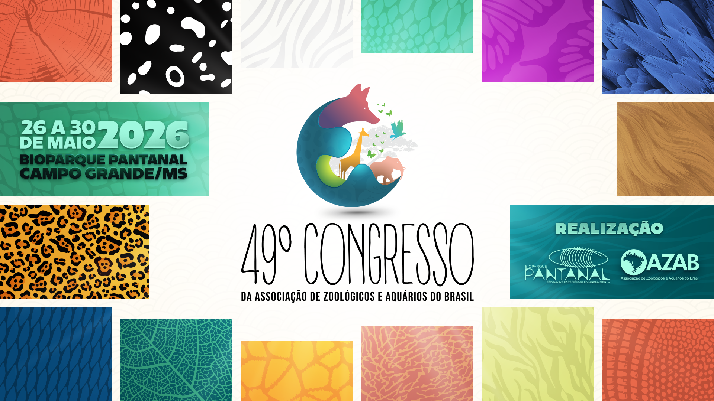

49º Congresso AZAB
“Um mergulho na conservação: ciência, sociedade e meio ambiente”

49º Congresso da AZAB
Realizado pelo Bioparque Pantanal em parceria com a AZAB.
O 49º Congresso da Associação de Zoológicos e Aquários do Brasil (AZAB), realizado pelo Bioparque Pantanal em parceria com a AZAB, terá como tema "Um mergulho na conservação: ciência, sociedade e meio ambiente". O evento reunirá estudantes, pesquisadores e profissionais de todo o país em um espaço de diálogo, troca de experiências e atualização técnica sobre os desafios e avanços da atuação em zoológicos e aquários. A programação contará com palestras, mesas-redondas e minicursos, promovendo a integração entre ciência, educomunicação e gestão, com foco no fortalecimento da conservação da biodiversidade. INSCRIÇÕES E INFORMAÇÕES ATRAVÉS DO LINK: 49 Congresso AZAB
Inscrições e informações através do site oficial do evento. A programação contará com palestras, mesas-redondas e minicursos, promovendo a integração entre ciência, educomunicação e gestão.
Reviva os congressos anteriores
Acesse os anais e certificados das edições anteriores do Congresso AZAB.